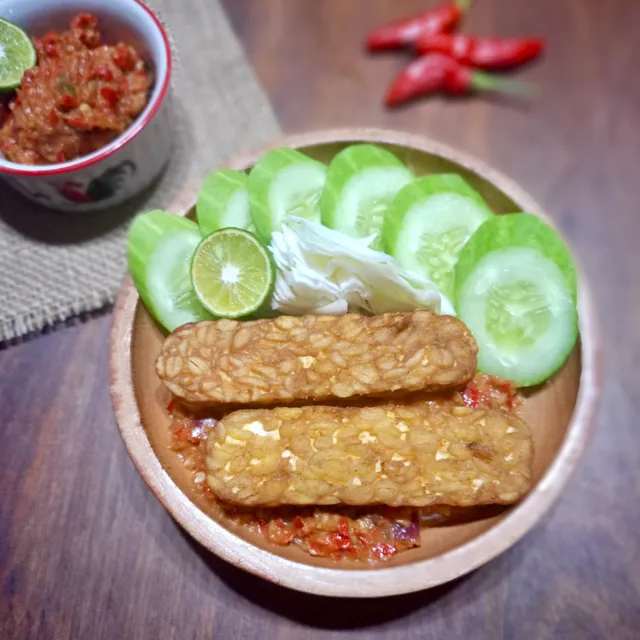

Home
Tempe Penyet Recipes

Bahan bahan yang dibutuhkan:
- Bahan pokok
- 1 papan tempe, potong kotak besar
- 1 bungkus bawang putih bubuk
- 1 bungkus bumbu marinasi
- 1 sdt garam
- 3 sdm air
- Minyak goreng secukupnya
- Bahan untuk sambal:
- 20 buah cabe merah
- 10 buah cabe rawit hijau
- 5 buah cabe rawit merah
- 6 siung bawang putih
- 8 siung bawang merah
- 1 buah tomat merah dibelah dua
- 1 buah terasi bakar
- 1 sdm gula merah
- 1 sdt garam
- 1 buah jeruk limau
- Langkah - langkah cara pembuatan
- Bumbui tempe dengan bawang putih, ketumbar dan air. Goreng tempe hingga matang. Angkat lalu sisihkan.
- Goreng cabe merah, cabe rawit, bawang merah, bawang putih, tomat dan terasi hingga layu. Angkat.
- Chopper semua bahan sambal yang telah digoreng. Tambahkan gula dan garam, aduk rata. Beri sedikit kucuran air jeruk limau, aduk rata.
- Masukkan tempe goreng, penyet di atasnya. Siap disajikan.